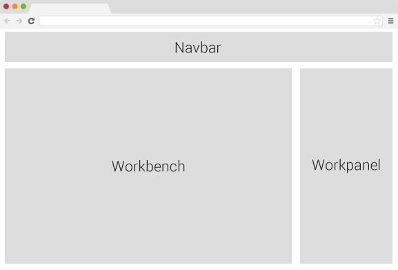

An application to abstract and visualize the edit procedure of common web pages. Combine the two words Page and Editor, we get the project's name Peditor | 'peditə |.
| port | The server port. |
| debug_port | Debuger listener port |
| db_port | Database port |
| mode | The default mode is development mode. |
npm install --production
npm run-script db
npm run-script client
npm start
npm restart
npm stop
npm run-script launch
source kit/shell_evn.sh
npm install
npm run-script watch
npm test
The knowledge required to develop this project.
| Frameworks | Linux, CouchDB, Node |
| Libraries | Express.js, Underscore.js, jQuery, Bootstrap |
| Manager | npm, bower, grunt |
| Languages | Coffeescript, Javascript, html, stylus, css |
The knowledge required to create widget.
| Libraries | jQuery |
| Languages | Coffeescript, html, stylus |
Here I introduce a new web app architecture that I created, MSV. For more information about the MSV, read this article.
Compared with the famous MVC, there is no controller component, instead the service component will take the charge.
The biggest disadvantage of this architecture is that it heavily depends on js and ajax. But it brings back better response performance and smoother user experience.
There are two types of layout mode, Outlone and Preview.
To make it easy to see the relationship between containers.
All containers are created by 'drag and drop'. Now there're four types of containers:
You can visit http://localhost:port/widgets/your_widget_name to debug your created widget.
Here's the properties that editable for each container.
| Root | background image, width |
| Row | background image |
| Column | background image |
| Widget | Implemented by widget itself. |
Works the same as a common editor.
Here a simple overview of the widget api.
A file for saving the edit's states. I call the format Page Document, file extension '.pdoc'. It saves the edit commands and page resources. The pdoc is based on json, and utf-8 encoded. Here's the overview of its fields.
| _id | A unique id of the pdoc. |
| _rev | The unique revision id of the pdoc. |
| mime | The file's MIME information. Default value is 'text/pdoc+json'. |
| doc | The html that represents the current page state. |
| scripts | The js and css that the page requirs. |
The CouchDB is good enough, it has already covered most the requirements with its build-in functions.